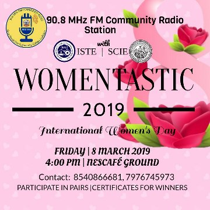

WomenTastic 8th Mar | 4pm

A Celebration of the spirit of Womanhood on a Special day... blah blah blah vgerah you know the rest
Enjoy our entertaining shows that compel you to think of the community.
Moments you just can't forget.
Because what is college life without some fun, right?

Our focus is to provide a platform enabling individuals, groups and communities to tell their own stories, to share experiences and to become creators and contributors of media in this media-rich world.
The 90.8 FM Community Radio Station of Guru Nanak Dev Engineering College Ludhiana is an effort to serve the society by broadcasting programmes pertinent to education, information, entertainment, recreation, public affairs, culture, career, sports, et al.
Making the magic happen, day in and day out!
>A line about them, preferably given by themselves<
>A line about them, preferably given by themselves<
>A line about them, preferably given by themselves<
>A line about them, preferably given by themselves<
>A line about them, preferably given by themselves<
>A line about them, preferably given by themselves<
..